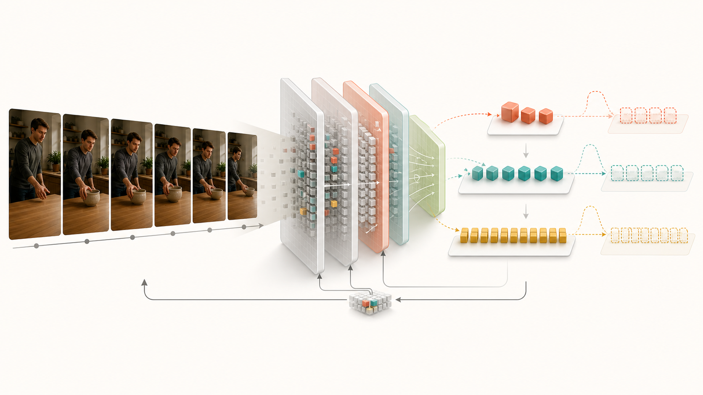

RESEARCH BRIEF · LITERATURE SWEEP THROUGH 2026-08-09
One Video, Any Budget
목표는 token 수만 줄이는 compressor가 아니다. 영상의 미래를 이해하는 데 충분한 상태를
만들고, budget이 허용하는 만큼만 encoder 계산과 표현을 점진적으로 확장하는 video encoder다.
핵심 thesis
영상이 요구하는 token 수는 pixel complexity가 아니라
아직 설명되지 않은 semantic state와 innovation으로 결정되어야 한다.

구조 개념도: 작은 core는 항상 계산하고, 앞 group이 설명하지 못한 semantic residual만 더 깊게 처리한다.
상세 proposal은 이 일반 구조에 state·innovation 역할을 명시적으로 부여한다.
01 · RESEARCH VERDICT
셋 다 가능하다. 대신 세 논문이 답할 질문을 섞지 않는다.
VideoFlexTok은 이미 time-causal encoder, nested dropout, DINOv2 REPA, streaming tokenization을
generation 축에서 제시했다. Query-aware hierarchy와 latent video reasoning에도 2025–2026년의 강한
경쟁작이 있다. 그렇다고 세 아이디어가 불가능한 것은 아니다. 각각의 novelty와 결정적 실험을 아래처럼
분리하면 독립된 논문 질문이 된다.
01FLAGSHIP
State–Innovation Anytime Encoder
video-native token role과 실제 encoder compute를 함께 학습
Potential
높음
Novelty
4 / 5
Feasibility
4 / 5
모호한 coarse-to-fine 대신 persistence와 innovation을 대칭 token role로 정의한다. 추가 group은
작은 budget이 놓친 semantic residual을 맡고, encoder depth와 active token 수도 함께 줄인다.
02MULTI-QUERY
Online Multi-Query Amortization
문헌 재검토 중: 미래 질문을 모르는 sequence-level evidence acquisition
Potential
검증 필요
Novelty
미확정
Feasibility
Oracle audit 우선
tree·cache·future-query compression은 이미 강한 선행 연구가 있다. 남은 가설은 online policy가
query sequence 전체의 신규 visual evidence 비용을 offline oracle에 가깝게 줄일 수 있는지다.
03HIGH RISK
Adaptive Visual Latent Reasoning
기억 선택이 아니라 recurrent visual latent 안에서 reasoning 자체를 수행
Potential
매우 높음
Novelty
4 / 5
Feasibility
3 / 5
streaming world-state가 future latent를 예측하고 새 관측과 비교해 belief를 반복 수정한다. budget이
늘면 기억만 많아지는 것이 아니라 latent reasoning step도 늘어난다.
02 · RECOMMENDED FLAGSHIP
State–Innovation Matryoshka Video Encoder
Working title: Not Coarse-to-Fine: State–Innovation Tokens for Anytime Video Understanding
한 문장 claim
우리는 video representation을 지속되는 semantic state와 새로 발생한 semantic innovation으로 나누고,
모든 token·FLOP budget에 두 역할을 함께 주어 temporal understanding을 보존한다.
STREAM
x≤t
→
Budget group 1State + innovation core
모든 budget에서 실행
Budget group 2Transition residual
앞 group이 놓친 변화
Budget group 3+Rare-event residual
필요할 때만 깊게 실행
→
NESTED STATE
Z¹ ⊂ Z² ⊂ Z³
SEMANTIC TEACHERNot fixed to V-JEPA
V-JEPA · VideoMAE · EMA
split state / innovation
CONCEPTUAL BUDGET LAB
Budget을 올리면 앞 group이 놓친 semantic residual만 확장한다.
가장 작은 budget도 persistent state와 짧은 innovation을 함께 보존해야 한다.
각 budget tier가 더 작은 prefix에 남은 state·innovation residual을 설명하게 하여 token 중복을 줄인다.
C3
Anytime encoder execution
nested output뿐 아니라 encoder 내부에서도 쉬운 token을 일찍 멈춘다. 하나의 weight로
token–FLOP Pareto frontier 전체를 제공한다.
TRAINING OBJECTIVE
각 group은 더 작은 budget이 남긴 semantic residual을 맡는다.
St = A(Y<t), It = Yt − St
L = Σk[d(ΔŜk, St − Ŝ<k) +
d(ΔÎk, It − Î<k)] + λcostE[FLOPs]
NO-SCRATCH RECIPE
현실적인 학습 순서
기존 nested video token의 역할을 full split intervention probe로 먼저 분석한다.
V-JEPA와 control teacher의 feature를 cache하고 direct REPA와 제안 loss를 비교한다.
가능성이 확인되면 student 마지막 block과 LoRA를 점진적으로 연다.
LLM 연결은 encoder 가설이 검증된 뒤 projector/SFT 단계로 분리한다.
FOUR FALSIFIABLE HYPOTHESES
논문이 반드시 증명해야 할 것
한 모델의 모든 budget이 budget별 전용 모델에 근접한다.
명시적 role loss가 direct REPA보다 order와 state-change를 잘 보존한다.
in-encoder routing이 post-hoc pruning보다 실제 TTFT와 GFLOPs를 줄인다.
role ordering과 Pareto gain이 teacher와 dataset이 바뀌어도 유지된다.
03 · THREE TOPICS, REBUILT
각 아이디어를 논문 단위로 구체화하면
탭을 눌러 각 안의 실제 novelty, 학습 방식, 결정적 실험과 중단 기준을 비교할 수 있다.
TOPIC 01 · PRIMARY
Temporal reasoning을 보존하는 실제 dynamic encoder
VideoFlexTok의 “generation을 understanding으로 바꾼다”만으로는 약하다. time-causal과 streaming도
이미 들어 있다. novelty는 video token role audit + state–innovation successive alignment + internal conditional compute다.
모든 budget group에 state·innovation register를 쌍으로 배치
k번째 group은 k−1 prefix가 남긴 semantic residual만 정렬
V-JEPA, VideoMAE 계열, EMA self-teacher에서 역할 ordering을 교차 검증
budget-conditioned stochastic training으로 하나의 weight 유지
Decisive experiment
같은 output token 수와 같은 encoder GFLOPs에서 reconstruction/DINO teacher 대비 TempCompass의
direction·order, Something-Something v2, action anticipation을 동시에 개선해야 한다.
Kill criterion
role ordering이 teacher에 따라 사라지거나 direct REPA와 같은 GFLOPs에서 temporal score 차이가 없거나,
routing overhead를 포함한 latency가 fixed encoder 대비 줄지 않으면 claim을 축소한다.
MetaCompress는 unknown future prompt를 위한 prompt-agnostic compression을, ReKV·MuKV·OASIS는
persistent video memory와 repeated QA를 이미 다룬다. 따라서 새 tree나 cache를 주장하지 않고,
online policy와 full-sequence offline oracle의 cumulative cost gap을 연구 대상으로 둔다.
Evidence index
Opened evidence ledger
Reuse
Retrieve
Refine
Q₁
O₁
Q₂
O₂
Q₃
O₃
Unknown sequential queries
Q1retrieve evidence Apay A
Q2reuse A + refine Bpay B
Q3reuse A, Bnear-zero new evidence
Method
P1·MetaCompress·StreamMem 등 기존 representation을 evidence index로 사용
현재 query와 이미 열린 evidence를 조건으로 신규 evidence의 marginal value 예측
전체 query sequence를 아는 offline oracle로 minimum evidence union 계산
online policy는 미래 query 없이 reuse·retrieve·refine·evict 행동 수행
oracle imitation 후 offline RL로 answer risk와 new compute를 공동 최적화
query 수·순서·관련도·memory budget별 cumulative cost와 regret 평가
Decisive experiment
SVBench·OASIS SQA의 실제 sequential queries에서 Q={1,2,4,8,16}을 평가한다. 동일 accuracy에서
cumulative new visual cost가 ReKV·MuKV·OASIS·dense prefix cache보다 낮고 offline oracle에 가까워야 한다.
Kill criterion
offline oracle과 independent retrieval의 차이가 작거나, 기존 persistent cache가 같은 cumulative
cost를 얻거나, gain이 exact GT overlap에만 존재하면 Proposal 2를 독립 논문으로 진행하지 않는다.
Predict–correct 자체는 RSSM·Dreamer에 이미 있고 latent prediction은 V-JEPA가 강하다. 차별점은
uncertainty-calibrated semantic innovation이 고정 state의 memory write와 recurrent correction
depth를 공동 제어해 accuracy–compute Pareto를 개선하는 데 있다.
multi-horizon teacher latent distribution μₜ·σₜ를 예측
실제 관측 residual을 uncertainty로 정규화해 semantic innovation Iₜ를 계산
Iₜ가 높은 state slot에만 evidence를 write하고 weight-tied corrector를 반복
easy event는 일찍 멈추고 unexpected state change에만 추가 compute를 사용
downstream head는 bounded posterior state만 읽어 anticipation을 수행
Decisive experiment
EK100과 Ego4D 전체 official split에서 RSSM, raw surprise, fixed depth, larger memory와 비교한다.
calibrated innovation이 같은 평균 FLOPs와 state budget에서 더 높은 anticipation 성능을 만들고,
unexpected event에서 더 빠르고 정확한 posterior correction을 보여야 한다.
Kill criterion
같은 compute의 RSSM·raw-surprise controller와 차이가 없거나, correction step을 늘려도 future
prediction과 anticipation이 오르지 않으면 joint innovation controller와 latent reasoning claim을 줄인다.
PIPELINE SMOKE TEST · 2026-08-09
12-video run은 학습·측정 코드가 동작하는지만 확인했다. 가설 판정에는 사용하지 않으며, 공식 split 전체·video-native backbone·matched compute·3 seeds·두 benchmark를 갖춘 실험만 논문 근거로 인정한다.
01 · Anytime: state–innovation token roles와 encoder 내부 conditional compute를 하나의 nested representation으로 묶는다.
02 · Multi-query: 미래 질문을 모르는 online policy가 sequence 전체의 신규 evidence 비용과 offline-oracle regret를 줄이는지 검증한다.
03 · Predictive filtering: calibrated innovation으로 bounded state write와 recurrent correction compute를 공동 배분한다.
BOTTOM LINE
하나의 backbone, 세 개의 독립 질문.
셋 다 논문이 될 수 있다. 1번은 얼마나 적게 encode할 수 있는가, 2번은 한 번 encode한
영상을 몇 개의 query가 얼마나 싸게 공유하는가, 3번은 prediction innovation이 bounded
memory와 recurrent compute를 효율적으로 배분하는가를 묻는다. 구현 자산은 공유하되 contribution과 성공 기준은
합치지 않는다.